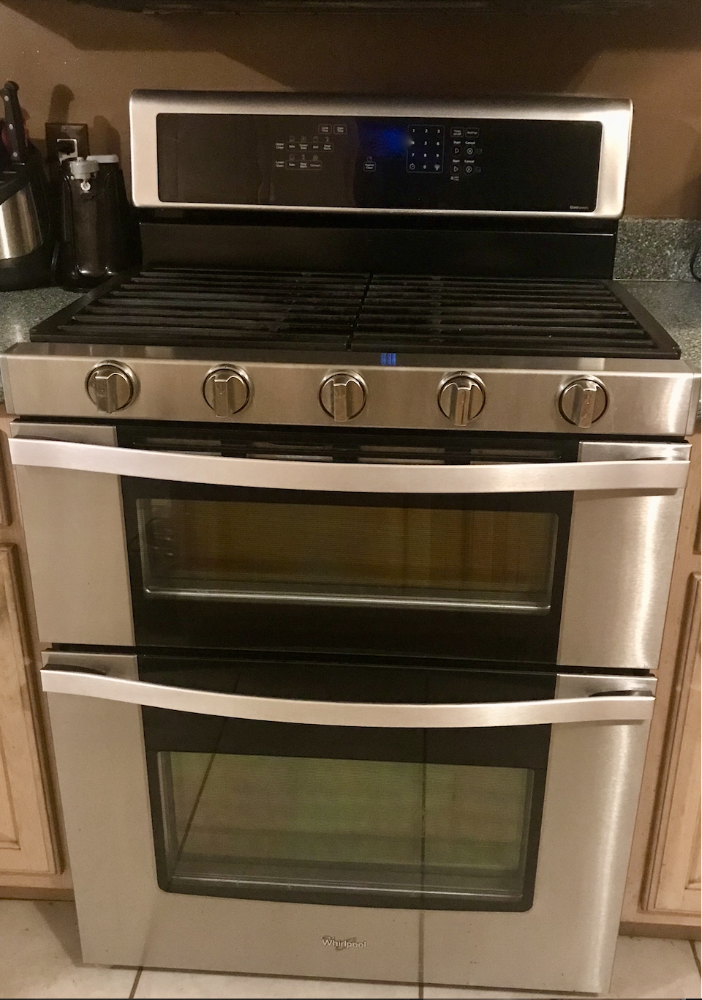
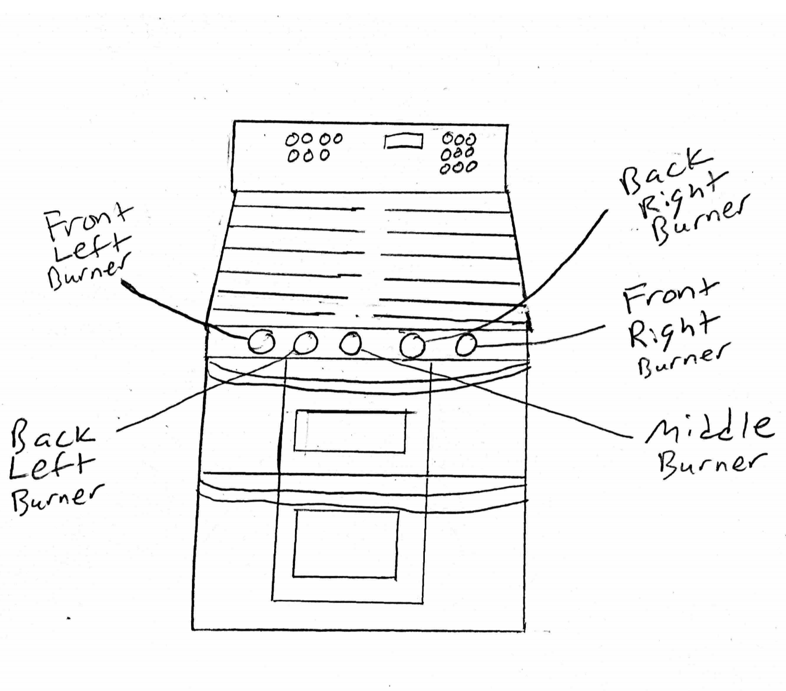
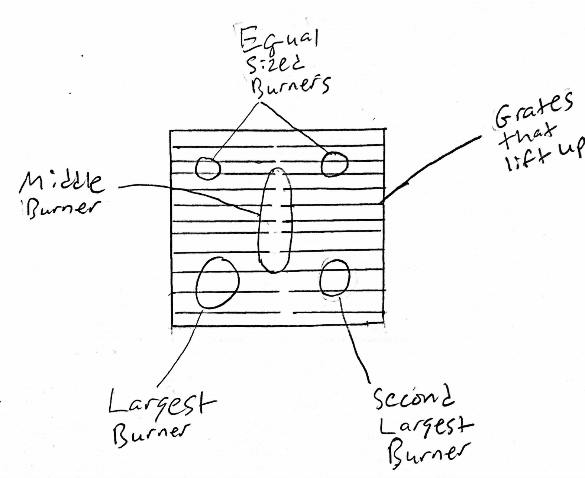
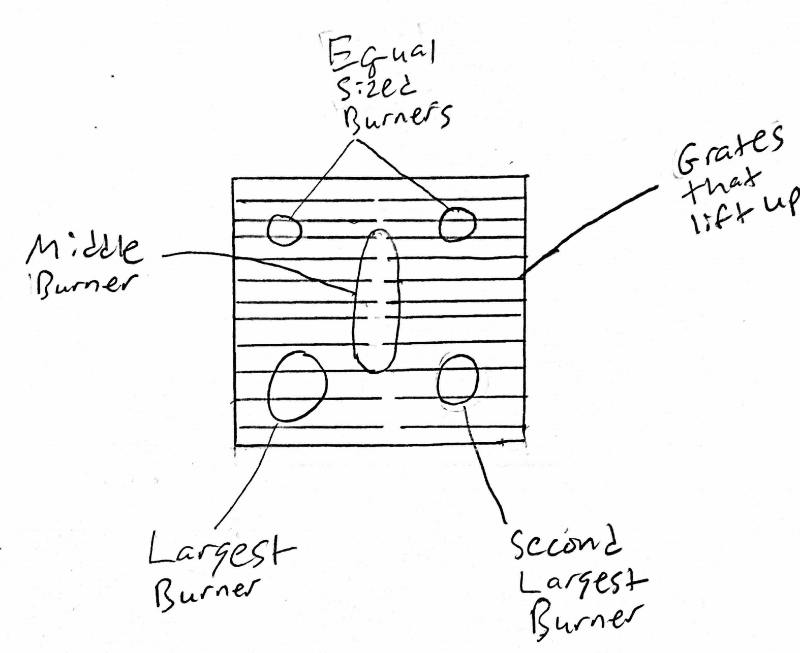

Interface Description and Drawing
The interface that I chose to study was a kitchen stovetop as it is a common appliance fond in many households and common areas.
Entire Unit
 Overhead View
 

The drawing above is a depiction of the gas kitchen stovetop that I observed people using for this assignment. The main problem that it is trying to solve and its main function is that it simply offers an easy way for users to cook and heat food. This stovetop has four main burners, with two on each side, and one burner in the middle. Out of the four main burners, the two largest ones are located in the front of the stove, with the one on the left side being bigger, and the two in the back are smaller and are equal in size. Each of knobs corresponds to a specific burner, which is not labeled, and to start one a user must turn the knob to left. Also, grates cover most of the stovetop and each side is connected and lift up to allow users to clean the burner area. This stovetop is part of a unit that also includes a double oven, but for this assignment the observations and interviews were solely focused on the stovetop.